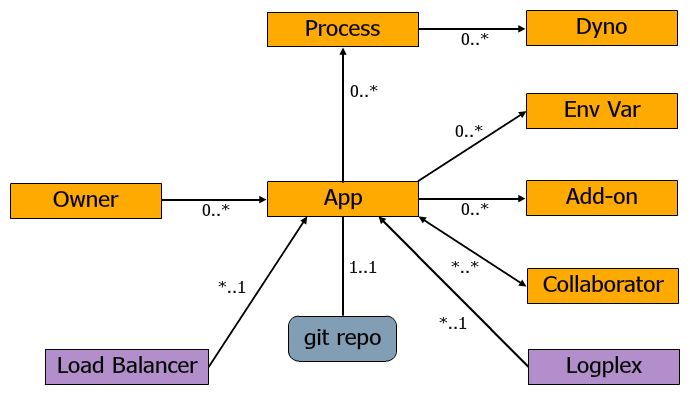
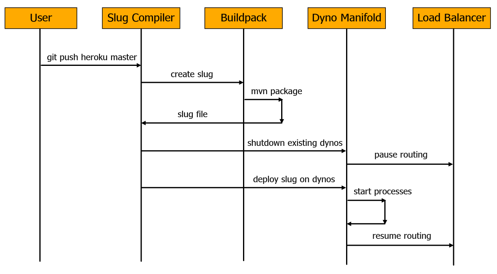

Practicing Continuous Delivery
@_JamesWard
Agenda
Continuous Delivery

Goals: Deliver Faster & Reduce Risk
Adjustable Process
- Easy: Deploy direct to production
- Safe: Check into SCM, run CI / tests; then deploy
Continuous Delivery at Heroku
- 4000+ Heroku apps on Heroku
- 500+ releases a day
- 200+ deploys a day
- 85 people
- 21 teams
Variety of Technology Options
The examples here use:
- Play Framework with Java
- Git
- Heroku
- PostgreSQL
Play Framework

Play is based on a lightweight, stateless, web-friendly architecture and features predictable and minimal resource consumption (CPU, memory, threads) for highly-scalable applications - thanks to its reactive model, based on Iteratee IO.
Play is based on a lightweight, stateless, web-friendly architecture and features predictable and minimal resource consumption (CPU, memory, threads) for highly-scalable applications - thanks to its reactive model, based on Iteratee IO.
My Top 10 Favorite Features
- 0) Simple
- 1) URL Routing
- 2) Class Reloading
- 3) Share-Nothing
- 4) Java & Scala Support
- 5) Great Testing Support
- 6) JPA/EBean Support
- 7) NIO Server (Netty)
- 8) Asset Compiler
- 9) Instant Deployment on Heroku
Create a new Play App
$ play new fooGit- Distributed SCM
Create a Git Repo:
$ git init
$ git add .
$ git commit -m initHeroku
Cloud Application Platform


1,871,268+ Apps Running on Heroku
Heroku Terminology
Deploying on Heroku
Provision an App
$ heroku createDeploy
$ git push heroku masterMake a Change & Deploy
$ # make change
$ git commit -am "change"
$ git push heroku masterPractice: Micro Apps
Barrier: Monolithic Apps
Does app startup take more than 1 minute?
- Decouple through APIs (HTTP, Pub/Sub, etc)
- Reduce the barriers to deploying new apps
Add a JSON Service
app/controllers/Applicaiton.java
public static Result hello() {
ObjectNode result = Json.newObject();
result.put("message", "hello, world");
return ok(result);
}conf/routes
GET /hello controllers.Application.hello()Deploy
$ git commit -am "Add JSON Service"
$ git push heroku masterPractice: Checkout, Build, Run
Barrier: Creating New Environments is Difficult
Does getting a new developer setup take more than 15 minutes?
- It works on my machine.
- Everything needed is defined & resolvable via a build tool
- Environments only differ through configuration
Staging Environment
Create a Staging App
$ git remote rename heroku prod
$ heroku create -r stagingPush a New Feature to Staging
$ git checkout -b newfeature
$ # make a change
$ git commit -am "new feature"
$ git push staging newfeature:master
Practice: One Way Deployment
Barrier: Unknown Source to Deployment Correlation
Can I SSH in and make a change?
- Production changes requires source changes
- Correlation between code and running systems
Heroku Releases
$ # make a change
$ git commit -am "a change"
$ git push prod master$ heroku releases
$ git log
$ heroku rollbackPractice: Zero Intervention Deployment
Barrier: Complicated Deployment Procedures
Are there any credentials stored in the source repo?
- Each environment owns their config
- External Resources own their config
Heroku Config
$ heroku config:add FOO=bar
$ heroku config
$ # use System.getenv("FOO")
$ git commit -am "add FOO use"
$ git push heroku masterExternal Resources Own Their Config
$ heroku config
$ heroku pg:reset *** TODO ***
$ heroku configPractice: Isolated Schema Changes
Barrier: Combined Schema and Codes Changes
Do schema changes and code changes happen at the same time?
- Versioned, Roll-Backable, etc
- Long running schema changes don't impact runtime
- Minimum Two Phase Migrations: First DB then Code
Setup Database
project/Build.scala
"postgresql" % "postgresql" % "9.1-901-1.jdbc4"conf/application.conf
db.default.driver=org.postgresql.Driver
db.default.url=${?DATABASE_URL}
ebean.default="models.*"
applyEvolutions.default=trueCreate local Postgres Database
$ sudo -u postgres createuser -P f
$ createdb -U f -W -h localhost f
$ export DATABASE_URL=postgres://f:f@localhost/fCreate and Apply Schema Changes
conf/evolutions/default/1.sql
# --- !Ups
create table bar (
id varchar(255) not null,
name varchar(255),
constraint pk_bar primary key (id));
create sequence bar_seq;
# --- !Downs
drop table if exists bar cascade;
drop sequence if exists bar_seq;Apply Schema Changes Locally and Test
$ psql -U f -W -h localhost fApply Schema Changes on Heroku and Test
$ git add conf/evolutions/default/1.sql
$ git commit -am "add schema v1"
$ git push prod master
$ heroku pg:sql *** TODO ***Use the New Schema
app/models/Bar.java
package models;
import play.db.ebean.Model;
import javax.persistence.Entity;
import javax.persistence.Id;
@Entity
public class Bar extends Model {
@Id
public String id;
public String name;
}Test then Deploy
$ git commit -am "add Bar entity"
$ git push prod masterAdd a Column
Update the Schema (conf/evolutions/default/2.sql)
# --- !Ups
alter table bar add column rating integer;
# --- !Downs
alter table bar delete column rating;Test then Deploy
Update the Code (app/models/Bar.java)
public Integer rating;Test then Deploy
Practice: Ephemeral App Tier
Barrier: State in the App
Does a Chaos Monkey cause chaos?
- Local disk and memory are not persistent stores
- Server affinity prevents Continuous Delivery
- All persistent state is external to the app tier
Scaling on Heroku
$ heroku scale web=50
$ heroku psStateless Web Tier
- Add Session to App
- Deploy & Run
- Consistency Across Instances
- Restart Instances
Zero-Error Change-Over
Practice: Logs as Streams
Barrier: Decentralized Logging
Are logs written to local disk?
- Externalize & Centralize Logging
- One place to search
- Log rotation and disk filling are barriers
Logging on Heroku
- All STDOUT, Router Logs, Buildpack Logs goes to Logplex
- View the logs for an app:
$ heroku logs - Tail the logs for an app:
$ heroku logs -t
Practice: Monitor & Notify
Barrier: Reactive Feedback Loop
Do your users know before you when something goes wrong?
- Service Checks
- Log Monitoring
- Performance Monitoring
Service Checks
Log Monitoring
Papertrail
$ heroku addons:add papertrail
$ heroku addons:open papertrailPerformance Monitoring
New Relic
$ heroku addons:add newrelic
$ heroku addons:open newrelic